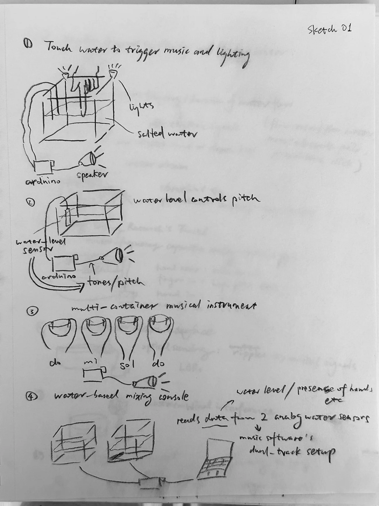
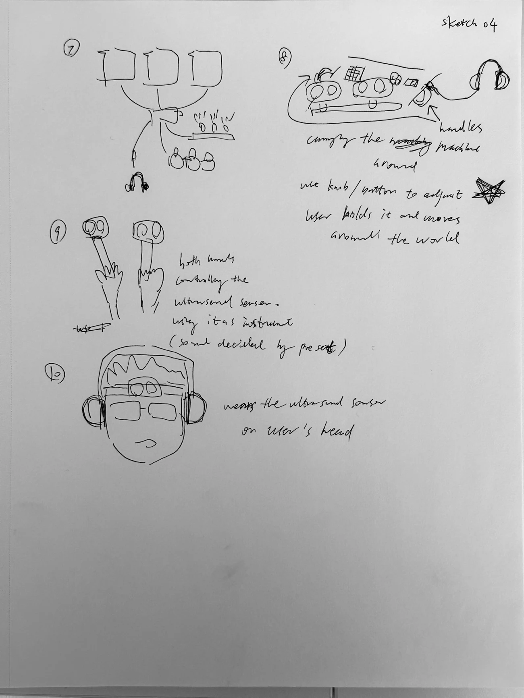
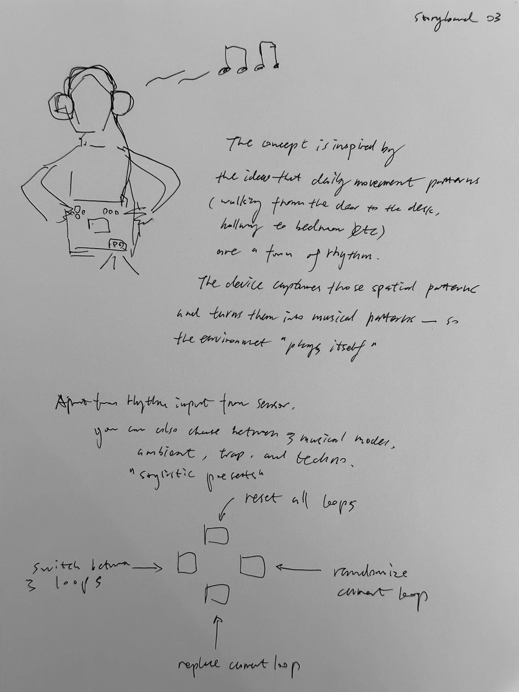
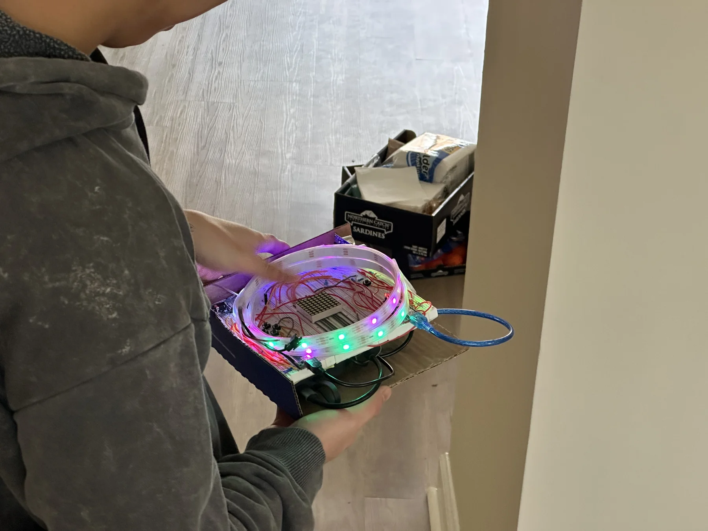
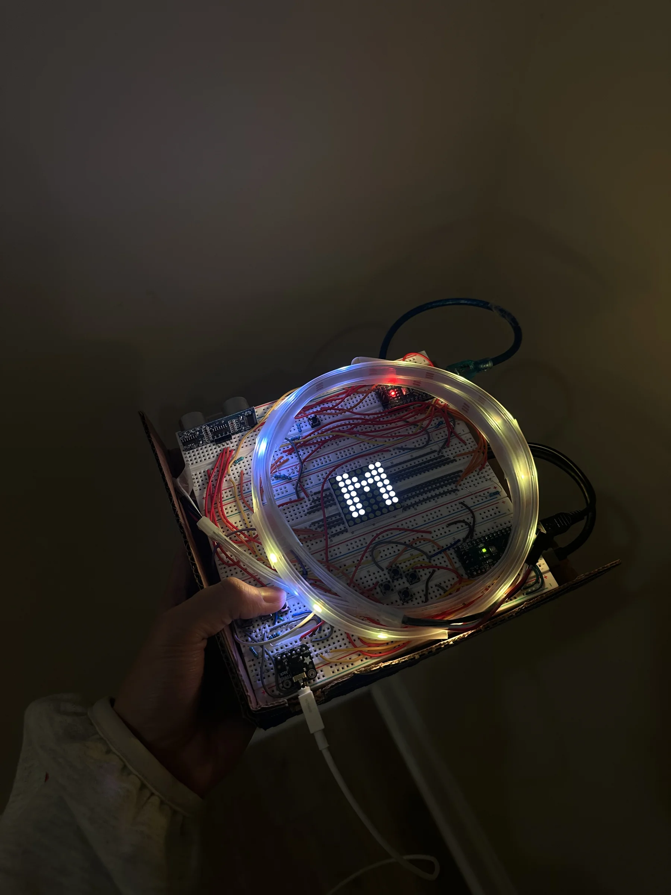
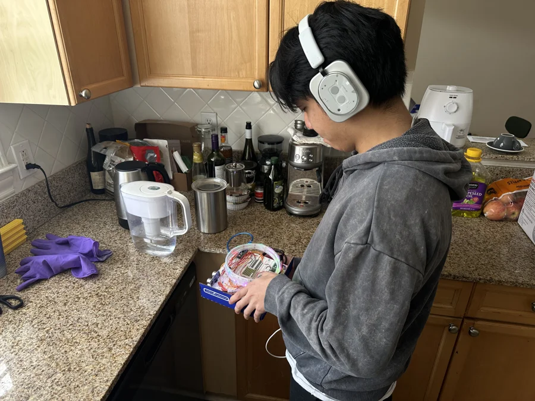

Physical computing / experimental instrument
WORLD SENSING
MUSIC STATION
A handheld instrument for turning
movement and space into sound.
Move your cursor around the instrument.
Scroll to explore
The world is the instrument
EVERYDAY
MOVEMENT
HAS RHYTHM.
World Sensing Music Station transforms physical movement into musical structure. An ultrasonic sensor reads distance and motion in real time, translating spatial behavior into rhythm, bass, melody, and repeating loops.
Everyday movement already contains rhythm.
This instrument makes it audible.
Movement → distance → data
MOVEMENT
BECOMES
A LOOP.
Distance is smoothed, then mapped into eight spatial zones. Each zone gives movement a place in the music. Movement speed shapes rhythmic activity.
Move your cursor, touch a zone, or use the distance slider.
Three musical layers
THREE LOOPS.
ONE
COMPOSITION.
Rhythm holds the pulse. Bass anchors the pattern. Melody gives it a shape. Three eight-step loops repeat together, turning a passing movement into something you can return to.
Movement → distance → smoothing
→ 8 spatial zones → 8 sequencer steps → loop
The interaction decision
CHANGE
ONE THING.
KEEP THE REST.
The instrument stays in PLAY. Replace one selected layer for a full eight-step cycle while the other loops continue. After eight steps, it returns to PLAY automatically.
PLAY / All three loops are repeating.
Move or change the distance while recording.
Visual simulation; enable sound to hear the loop.
Three ways to hear the world
SAME SPACE.
DIFFERENT
FEELING.
Ambient / 80 BPM / sparse pentatonic pattern
Device anatomy
OPEN BY
DESIGN.
Breadboards, jumper wires, two control boards and a coiled LED strip. The electronics stay exposed; the light makes the instrument’s state visible.
- Ultrasonic sensor
- LED matrix
- NeoPixel loop
- Button controls
- Audio output
- Control board
- Display board
How it works
RULES,
NOT RANDOM.
- Ultrasonic sensor reads distance
- Distance clamps invalid values
- Smoothing reduces sensor jitter
- 8 zones select a note in a scale
- Movement speed shapes rhythmic density
- Musical rules combine mode, step and motion
- Rhythm / bass / melody repeat as three loops
System architecture
TWO BOARDS.
ONE CLOCK.
BOARD A CONTROL
Sensing · sequencer · music logic · NeoPixel · seven buttons · audio · serial communication
BOARD B DISPLAY
LED matrix · mode · BPM · selected layer · REC / PLAY state
Separating display scanning from control prevents display timing from interfering with musical timing.
Design process / original sketchbook
BEFORE IT
HAD A SOUND.
From fluid experiments to a handheld loop instrument.
Original sheets from the project journal.
Drag the sheets or scroll horizontally.







The real prototype
WIRES.
LIGHT.
MOVEMENT.
A handmade instrument, carried through ordinary space.
The reconstruction begins here.




An ordinary room.
An unfamiliar way to listen.

Use cases
MUSIC, WHERE
YOU ALREADY ARE.
- DAILY MOVEMENT
- Repeated everyday routes become repeatable musical patterns.
- LIVE PERFORMANCE
- Replace layers through movement while previous loops continue playing.
- INTERACTIVE INSTALLATION
- Visitor position and traffic become musical input.
- NON-MUSICIANS
- Create structured music through movement rather than traditional musical technique.
Limitations / future
STILL A
PROTOTYPE.
CURRENT LIMITS
- Simple Arduino
tone()timbre - Ultrasonic noise in reflective spaces
- Fixed eight-step loops
- Time-sliced audio rather than true polyphony
- Prototype controls need physical labels
NEXT ITERATION
- Improved synthesis and envelopes
- Longer loops, variations and fills
- A second sensor or IMU
- Mute / solo and tap tempo
- Loop memory
In motion
HEAR THE
REAL THING.
Watch the physical prototype in use.
Research / sketches / documentation